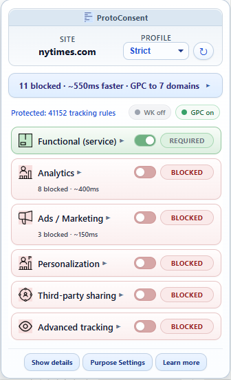
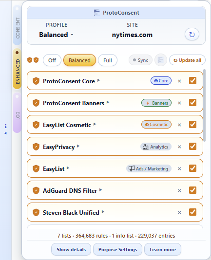

The gap between clicking “accept” and what actually happens to your data is invisible. Users have no consistent way to enforce or verify their choices across sites. ProtoConsent closes that gap: one place to manage data-use purposes, with enforcement and visibility at the browser level.
Give users one place to express their data-purpose choices across sites.
See what enforcement does: blocked requests, GPC signals, and site declarations, all visible in real time.
Turn abstract “tracking” into concrete, per-purpose decisions.
Enforce choices with browser-level rules, not one more on-page script.


Per-site profiles with purpose toggles, and optional Enhanced Protection with curated blocklists.
What it does
Consent you can enforce and verify
Per‑site profiles & purpose toggles: choose what each site may do with your data.
Browser‑level enforcement: decisions are applied locally as network rules.
Enhanced protection: optional curated blocklists from public sources and ProtoConsent's own core lists, with presets or per‑list control.
Conditional privacy signal (GPC): sent only when your choices justify it, per site.
Consent banner auto-response: cookie consent popups from 22 CMP frameworks (OneTrust, Cookiebot, Quantcast, IAB TCF v2.2, and others) are answered automatically based on your purpose preferences. No DOM interaction, no click simulation. Signatures updated via CDN. Activity visible in the Log and Debug tabs.
Site declarations: websites can publish their data practices; the extension shows them alongside your preferences.
Optional SDK: sites can read your choices and adapt. MIT licensed, null-safe.
Anti-fingerprinting: strips high-entropy Client Hints headers when advanced tracking is denied.
Inter-extension API: other privacy extensions can query the user's consent state via the browser messaging protocol.
ProtoConsent is a working browser extension with purpose-based enforcement,
a conditional GPC signal, site declarations, and an SDK. You can install it locally from GitHub and use it on real sites today.
Integrate the SDK: read user preferences from your pages. See the developer guide.
Open source (GPL-3.0+)SDK: MITFeedback welcomeOpen to collaboration
Who it's for
End users
Control how every website uses your data from a single popup. See exactly what gets blocked, per purpose and per site. Everything works locally in your browser.
Website owners & publishers
Declare your site's data practices with a single JSON file. ProtoConsent displays it to users alongside their preferences, with clear visual indicators for each purpose.
Developers
Read user consent preferences directly from the browser with the SDK. Or publish a .well-known/protoconsent.json to declare your practices. Both paths are straightforward.
Privacy & compliance teams
See how purpose-based controls work in practice. Use ProtoConsent to align consent flows, GPC signals, and analytics choices with your privacy strategy.
Live test
Your preferences for this site
This section queries the ProtoConsent extension in real time using the SDK protocol.
If the extension is installed, your current preferences for protoconsent.org are shown below.
Get involved
ProtoConsent is free and open source: GPL-3.0+ for the extension, MIT for the SDK, CC BY-SA 4.0 for documentation. Contributions, feedback, and adoption are all welcome.
Publish a .well-known/protoconsent.json on your site to declare your data practices. Check it with the validator.
Integrate the SDK (MIT) to read user preferences from your pages.
Open an issue or pull request on GitHub with feedback, bug reports, or ideas.